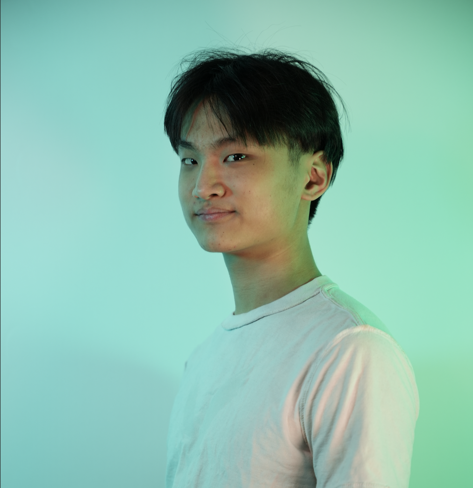

Biography

All of the works that you see here were written by Christopher Tai, a sophomore at Rutgers University - New Brunswick majoring in Computer Science and minoring in Creative Writing. Writing is Chris's way of interacting with the world around him, his way of turning a shared experience into something that is personal and deep.
"A Glimpse of Autumn" was published by GreenBlotter Magazine, and "Out of Time" won an honorary mention for the Evelyn Hamilton Creative Writing Award at Rutgers University. Despite these achievements, Chris's favorite work is "Baggage."